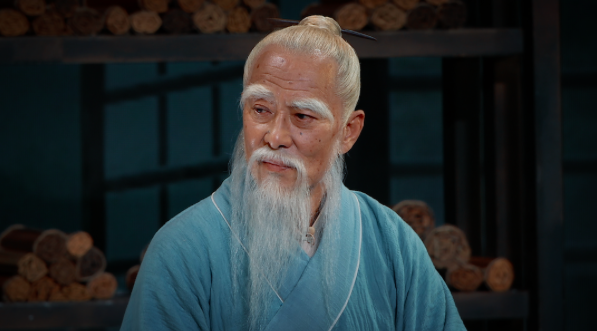
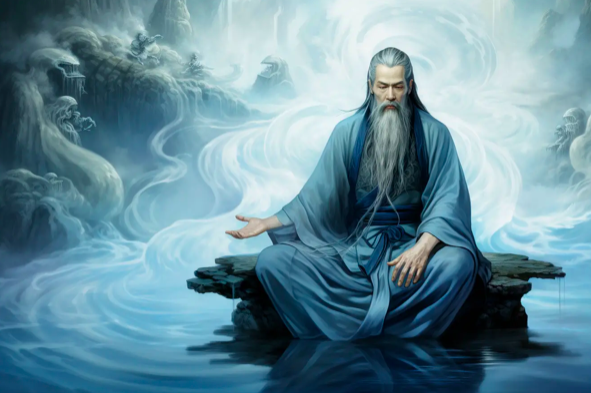

Lao-Tsé (Laozi)
Lao-Tsé (Laozi), el legendario fundador del taoísmo, vivió aproximadamente en el siglo VI a.C., aunque su existencia histórica exacta es debatida. Lao-Tsé es mejor conocido por su obra seminal, el "Tao Te Ching", un texto fundamental que establece los principios del Tao y el Wu Wei (acción sin esfuerzo). A través de sus 81 capítulos, el "Tao Te Ching" ofrece una guía poética y filosófica para vivir en armonía con el flujo natural del universo. Lao-Tsé promovió una vida de simplicidad, humildad y compasión, valores que han influido profundamente en la filosofía china y en la espiritualidad taoísta durante milenios.
Zhang Daoling (Zhang Dao Ling)
Zhang Daoling (Zhang Dao Ling), quien vivió durante el siglo II d.C. en la dinastía Han, es una figura central en el taoísmo religioso. Se le considera el fundador de la escuela del Camino de los Maestros Celestiales (Tianshi Dao), una de las primeras formas organizadas de taoísmo religioso. Según la tradición, Zhang Daoling recibió una revelación del deidad Laozi, lo que lo llevó a establecer un movimiento basado en la pureza espiritual y la rectitud. Su liderazgo y enseñanzas ayudaron a estructurar el taoísmo religioso con una jerarquía de sacerdotes y rituales destinados a mantener la armonía entre los humanos y los espíritus. Su linaje y legado continúan influyendo en las prácticas taoístas hasta hoy.
Wang Chongyang
Wang Chongyang, un influyente maestro taoísta del siglo XII d.C. durante la dinastía Song, fundó la escuela Quanzhen del taoísmo religioso. Quanzhen, que significa "Perfección Completa", se caracteriza por su énfasis en la integración de las enseñanzas del taoísmo, el budismo y el confucianismo. Wang Chongyang promovió la meditación, la purificación espiritual y la cultivación de la virtud como caminos hacia la iluminación. Su escuela sigue siendo una de las principales ramas del taoísmo religioso en la actualidad y es conocida por sus rigurosas prácticas de disciplina espiritual y su búsqueda de la unión con el Tao.
Zhuangzi (Chuang Tzu)
Zhuangzi (Chuang Tzu) fue un influyente filósofo taoísta que vivió alrededor del siglo IV a.C. durante el período de los Reinos Combatientes. Su obra homónima, el "Zhuangzi", es una colección de escritos filosóficos, parábolas y anécdotas que exploran temas como la relatividad de la experiencia humana, la libertad espiritual y la naturaleza del cambio. A través de sus historias vívidas y a menudo humorísticas, Zhuangzi desafía las convenciones sociales y filosóficas, promoviendo una vida en armonía con la naturaleza y la espontaneidad. Su enfoque en la relatividad y la percepción subjetiva ha tenido un impacto duradero en la tradición taoísta.
Ge Hong
Ge Hong, quien vivió durante el siglo IV d.C. en el período de los Jin Orientales, fue un destacado alquimista, médico y filósofo taoísta. Es conocido por su obra "Baopuzi" (El Maestro que Abraza la Simplicidad), un texto que trata sobre la alquimia, la medicina y la búsqueda de la inmortalidad. Ge Hong combinó elementos de la alquimia externa, como la creación de elixires, con la alquimia interna, que implica prácticas de meditación y cultivación espiritual para alcanzar la longevidad. Su enfoque integrador y sus contribuciones a la medicina tradicional china han dejado un legado duradero en las prácticas de salud y espiritualidad taoístas.
Liu Yiming
Liu Yiming, un destacado maestro taoísta del siglo XVIII durante la dinastía Qing, es conocido por sus escritos sobre la alquimia interna y la práctica espiritual. Como miembro de la escuela Quanzhen, Liu Yiming escribió extensamente sobre la transformación espiritual y la cultivación del Qi (energía vital). Sus obras ofrecen una guía detallada para la práctica de la alquimia interna, enfatizando la importancia de la meditación y la auto-purificación. Las enseñanzas de Liu Yiming siguen siendo influyentes en el estudio y la práctica del taoísmo moderno, proporcionando una base teórica y práctica para aquellos que buscan alcanzar la inmortalidad espiritual.
